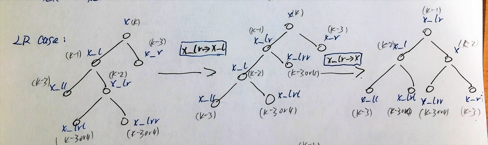
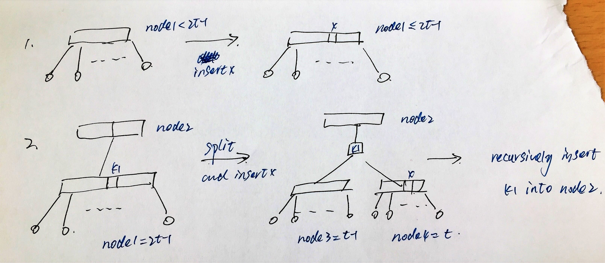
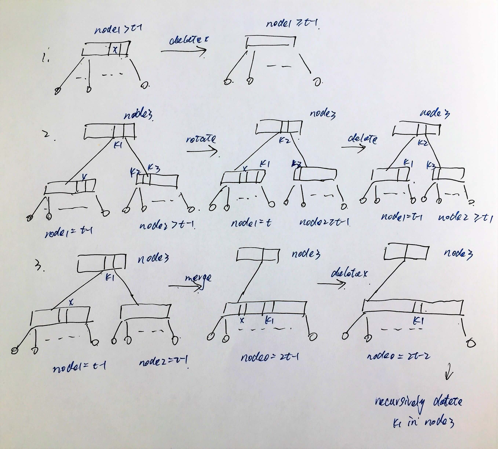

We mainly discuss 4 kinds of search trees. BST, AVL tree, B-tree and red-black tree.
Some definition:
- A None node is a node with no
val,leftorrightchild. - A leaf node is a node with
val, butleft = Noneandright = None. - A single node is a node with just
leftorrightchild (the other one is None). - A double node is a node with
left != Noneandright != None. - The predecessor of a node
xis the node comes right beforexin in-order traversal; the successor of a nodexis the node comes right afterxin in-order traversal.
Note Successor (or predecessor) of a node must not have right (or left) node, otherwise it’s right (or left) node with be the successor (or predecessor).
BST
Definition
BST (binary search tree) is a binary tree, with every node x satisfies: node value of x is greater than any node’s value in x’s left tree, and is smaller than any node’s value in x’s right tree.
Insert
In-place insertion.
Note: Every newly inserted node is a leaf node.
Delete
1. If the node is a leaf node: just delete it.
2. If the node is a single node: child takes it's place.
3. If the node is a double node: replace it with it's predecessor or successor, and then delete the predecessor or successor, which is a leaf node or a single node.
AVL tree
Definition
AVL tree is a BST which also satisfies $|height(x.left) - height(x.right)| \leq 1$ for any node $x$.
Def The balance of a node x $x.balance = height(x.left) - height(x.right)$.
Def $N_h$ = # min node-num in AVL tree of height $h$.
Then $Nh = 1 + N{h-1} + N_{h-2}$, in other words, $N_h > F_h = \frac{\phi^n}{\sqrt{5}}$
Explaination $Nh$ = $1$ (root) + $N{h-1}$ (left or right node number) + $N_{h-2}$ (right or left node number).
Rotate
In later sections, We also denote L_rotate(x) as r(x.left->x), R_rotate(x) as r(x.right->x).
Insert
1. Simple BST insert.
2. Fix AVL property from changed node (a leaf node) up.
Pseudo-code of fixing AVL property:
Some Illustration about LL, LR, RR, RL cases:
x is the first node violating ALV property, i.e. $|x.balance| > 1$
LLcase:
h(x_l) > h(x_r) & h(x_ll) > h(x_lr)LRcase:
h(x_l) > h(x_r) & h(x_ll) < h(x_lr)
RRcase:
h(x_l) < h(x_r) & h(x_rr) > h(x_rl)RLcase:
h(x_l) < h(x_r) & h(x_rr) < h(x_rl)
Delete
- Simple BST delete.
- Fix AVL property from changed node (a leaf node) up.
B-tree
Definition
An B-tree of order t:
- Root node has 1 to 2t-1 keys. (2 to 2t children)
- None nodes has no key.
- Non-root Non-None nodes has t-1 to 2t-1 keys. (t to 2t children)
- All leaves appear in same level.
Note: since all leaves appear in same level, there’s no single node in b-tree.
Insert
Insertion always start with leaf nodes, but it can recursively affect internal node.
1. If node key-num < 2t-1: insert in the node.
2. If node key-num = 2t-1:
(1) reshape the node to (t-1)--1--(t-1)
(2) insert the current node to one of the new child node.
(2) recursively insert the `root` node to parent node.

Delete
Deletion can aways be transfered to a leaf node (replace it with it’s in-order successor or predecessor, which is a single node, and since all leaf node appear in same level, it is bound to be a leaf node).
Delete a leaf node key:
1. If the key-num > t-1: delete with no other operation.
2. If the key-num = t-1 and one of its sibling's key-num > t-1:
(1) rotate the tree so its key-num > t-1;
(2) delete the key.
3. If the key-num = t-1 and all it's siblings' key-num = t-1:
(1) merge the node,parent key and sibling: (t-1)--1--(t-1) --> 2t-1;
(2) delete the key in 2t-1 node.
(3) recursively delete the `root` node in parent node.

Red-black tree
Definition
- Root rule: The root is black.
- External rule: Every external node (None node) is black.
- Red rule: The children of a red node are black.
- Black rule: Given a node x, any path from x down to a leaf node has the same black depth.
Further about black rule
def: b(x) is the black depth from root to any leaf passing node x. (If the black depth is not the same, then b(x) doesn’t exists).
Then: Black rule equals to: b(root) exists.
Rotation in red-black tree.
Rotation comes with color changing. When (x->y) in rb tree, x takes y’s color and y takes x’s color.
There are tow kinds of rotations in rb tree:
- Red push: (red->unknown). Doesn’t affect
b()values of any node. - Black push: (black->unknown). The
b()values varies.
b(n1) += 1
b(n2) = b(n2)
b(n3) -= 1
Insert
Assume the node we gonna insert is x, which is a RED leaf node.
If x is the root of the tree:
Yes: Recolor it BLACK. Done!!!
No:
If x.parent is BLACK:
Yes: Done!!!
No:
If x.uncle is BLACK:
Yes:
Triangle case: (x->x.p) convert to Linear case.
Linear case: (x.p->x.g) Done!!!
No:
Recolor (x.p, x.u, x.g) [Push up]
Let x = x.g and start again.
Delete
Assume we already change the node to be delete to it's successor node x (which is a leaf node or a right single node).
If x is RED:
Yes: Then it must be a leaf node, delete x. Done!!!
No:
If x.right is RED:
Yes: Replace x with x.right and recolor it black. Done!!!
No: Then x.right is a None.
Replace x with a DOUBLE BLACK node.

Now that we got a DOUBLE BLACK node x
If x is a root node:
Yes: Recolor it to single BLACK. Done!!!
No: X must have parent x.p, sibling x.s, nephews x.n1, x.n2.
If there's a RED node in x.n1 and x.n2:
Yes:
Triangle case: (x.n1->x.s) convert it to Linear case.
Linear case: (x.s -> x.p) and recolor x.n2 BLACK. Done !!!
No:
If x.p is RED:
Yes: Then x.s must be BLACK
Recolor x.p BLACK and recolor x.s RED. Done!!!
No:
If x.s is RED:
Yes: [Push Down] (x.s->x.p) and start from beginning. (Convert to x.p = RED cases)
No: [Push up] Recolor x to single BLACK, x.p to DOUBLE BLACK, x.s to RED, and start from beginning.